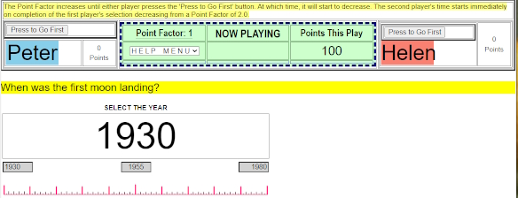
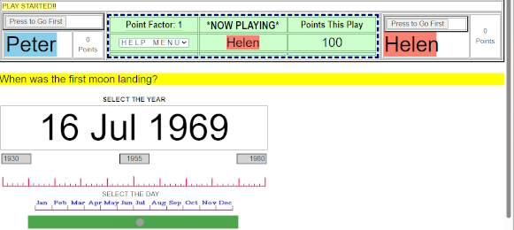
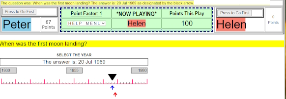

The above image of Game type D asks when was the first moon landing? The program bracketed the time from 1955 to 2005.
Above each player is a button that says, "Press to Go First".

In the above image, Helen has elected to go first. And clicked on the "Press to Go First" button.
A year slider appears which Helen selected the year 1970 and immediately after, a day slider
appeared and she selected 3 Aug as shown below
[Return to Game]images/GameD3a.jpg" width="578" height="260" alt="" title="" />

After Helen completed her selection, the play goes to Peter who selected 16 Aug 1969.

The above image shows the results of the play with the black arrow showing the
correct answer with the red and blue arrows
showing the respective answers from Peter and Helen.